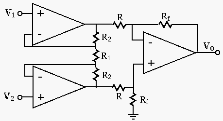
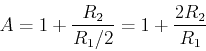
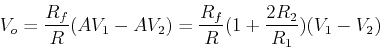
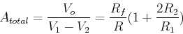

Next: About this document ...

As the two opamp circuits at the first stage are identical, we analyze the
lower one only. We recognize this as a noninverting amplifier with gain:

and the opamp circuit at the second stage is a differential amplifier,
therefore we have:

i.e., the total voltage gain is:

Ruye Wang
2008-01-20